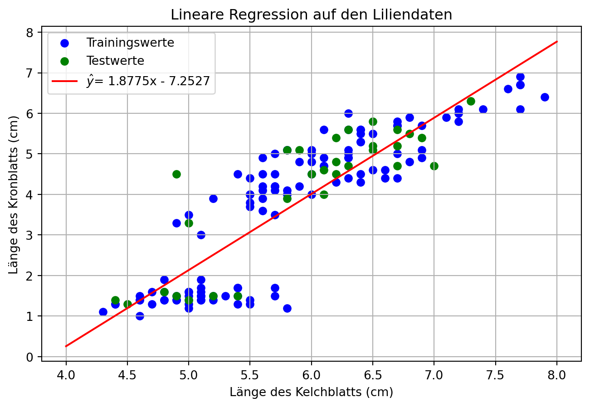
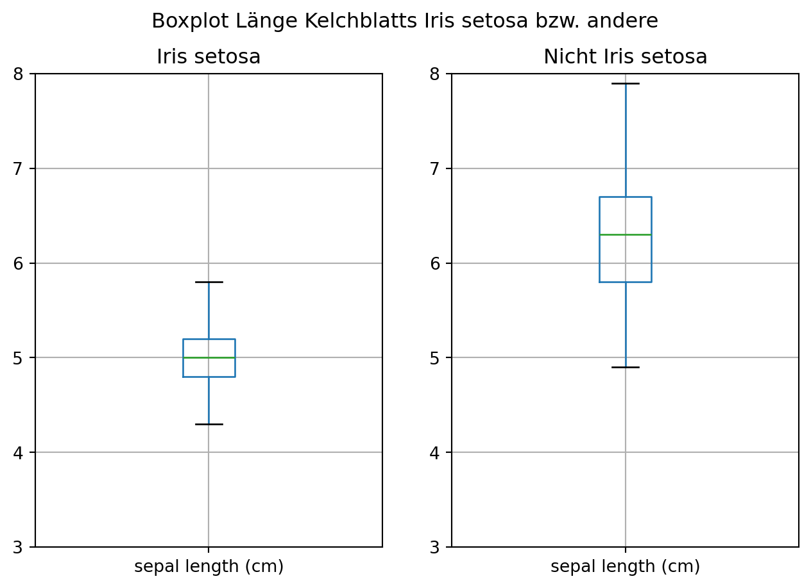
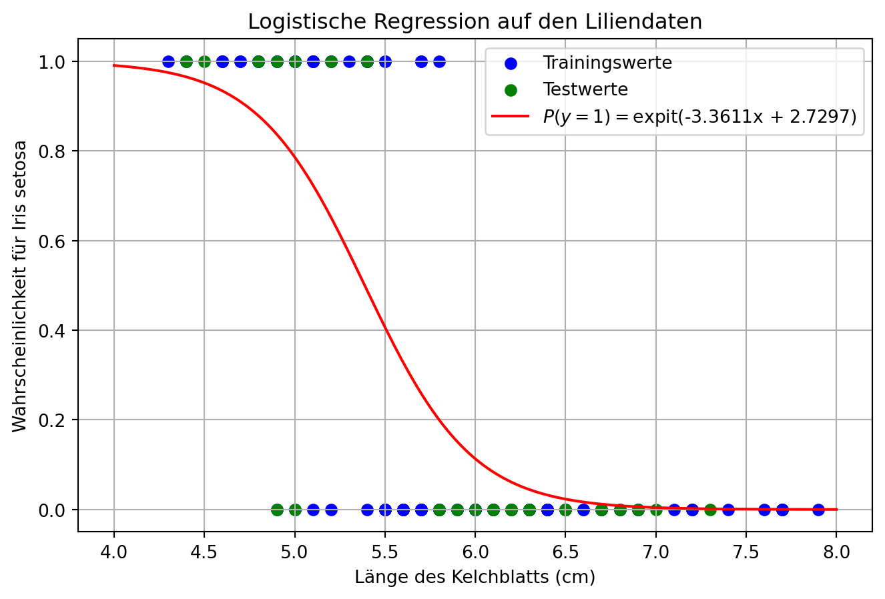
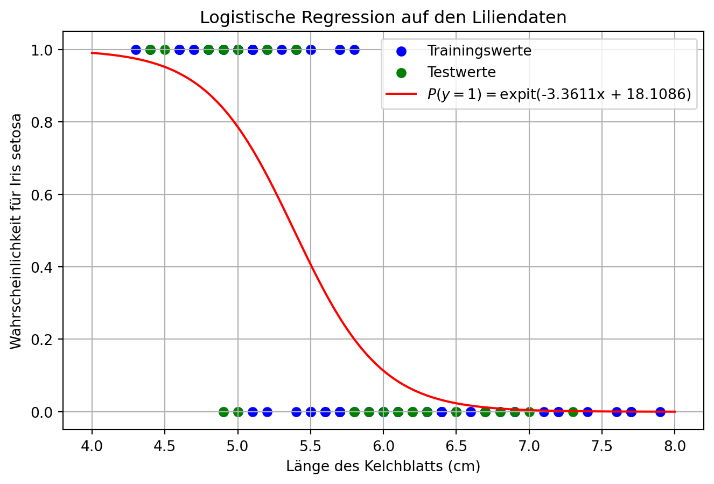

from sklearn.datasets import load_iris
import pandas as pd
iris = load_iris()
# Aus den Daten erzeugen wir einen Datenrahmen
X = pd.DataFrame(iris.data, columns=iris.feature_names)
y = iris.targetVorbereitung
Wir wollen hier mit den Daten aus der Datentabelle Schwertlinien (engl. iris flower data set) von Anderson bzw. Fisher. 1
Die Datentabelle enthält 150 Messungen von fünf Attributen:
- Länge des Kelchblatts (sepal length in cm),
- Breite des Kelchblatts (sepal width in cm),
- Länge des Kronblatts (petal length in cm),
- Breite des Kronblatts (petal width in cm) sowie
- Art (Spezies) (Borsten-Schwertlilie (Iris setosa) = 0, Verschiedenfarbige oder Schillernde Schwertlilie (Iris versicolor) = 1 und Virginische Schwertlilie (Iris virginica) = 2)
Finden kann mensch diese im Paket sklearn.datasets und laden mit dem Befehl load_iris():
Ein Blick auf X:
X.head()| sepal length (cm) | sepal width (cm) | petal length (cm) | petal width (cm) | |
|---|---|---|---|---|
| 0 | 5.1 | 3.5 | 1.4 | 0.2 |
| 1 | 4.9 | 3.0 | 1.4 | 0.2 |
| 2 | 4.7 | 3.2 | 1.3 | 0.2 |
| 3 | 4.6 | 3.1 | 1.5 | 0.2 |
| 4 | 5.0 | 3.6 | 1.4 | 0.2 |
Ein Blick auf y:
yarray([0, 0, 0, 0, 0, 0, 0, 0, 0, 0, 0, 0, 0, 0, 0, 0, 0, 0, 0, 0, 0, 0,
0, 0, 0, 0, 0, 0, 0, 0, 0, 0, 0, 0, 0, 0, 0, 0, 0, 0, 0, 0, 0, 0,
0, 0, 0, 0, 0, 0, 1, 1, 1, 1, 1, 1, 1, 1, 1, 1, 1, 1, 1, 1, 1, 1,
1, 1, 1, 1, 1, 1, 1, 1, 1, 1, 1, 1, 1, 1, 1, 1, 1, 1, 1, 1, 1, 1,
1, 1, 1, 1, 1, 1, 1, 1, 1, 1, 1, 1, 2, 2, 2, 2, 2, 2, 2, 2, 2, 2,
2, 2, 2, 2, 2, 2, 2, 2, 2, 2, 2, 2, 2, 2, 2, 2, 2, 2, 2, 2, 2, 2,
2, 2, 2, 2, 2, 2, 2, 2, 2, 2, 2, 2, 2, 2, 2, 2, 2, 2])(Einfache) Lineare Regression
Am Anfang steht eine (einfache) linearen Regression. Dabei erstellen wir ein Modell, bei dem wir die Länge des Kronblatts (petal length) auf Grundlage der Länge des Kelchblatts (sepal length) modellieren wollen. Also eine unabhängige Variable (UV, Prädiktoren, engl.: predictors) und eine (abhängige) Variable (AV, Zielvariable engl.: target).
# Zielvariable y_reg: Petal Length
y_reg = X["petal length (cm)"]
# Modellierungsvariable X_reg: Sepal Legth
X_reg = X.drop(columns=["petal length (cm)", "sepal width (cm)", "petal width (cm)"])Wir teilen nun unsere Daten in Test- und Trainingsdaten auf. Dabei sollen \(0.2=20\,\%\) der Daten zu Testdaten werden und \(1-0.2=0.8=80\,\%\) zu Trainingsdaten.
Die Auswahl erfolgt zufällig. Wobei wir hier einen mit random_state=2009 dafür sorgen, dass dieser Zufall reproduzierbar ist.
from sklearn.model_selection import train_test_split
# Aufteilen in Test- und Trainingsdaten
X_train, X_test, y_train, y_test = train_test_split(X_reg, y_reg, test_size=0.2, random_state=2009)Nun erstellen wir das lineare Regressionmodell und trainieren dieses mit den Daten X_train und y_train
from sklearn.linear_model import LinearRegression
# Modell
linreg = LinearRegression()
linreg.fit(X_train, y_train)LinearRegression()In a Jupyter environment, please rerun this cell to show the HTML representation or trust the notebook.
On GitHub, the HTML representation is unable to render, please try loading this page with nbviewer.org.
Parameters
Um das Modell zu prüfen lassen wir es nun aus unseren Testdaten (X_test) die Zieldaten (y_pred) modellieren:
# Vorhersage
y_pred = linreg.predict(X_test)Da wir mit y_test die tatsächlichen Daten kennen, können wir das nun mit unserem vom Modell modellierten Werten vergleichen und so unsere Modell bewerten.
Wir nutzen dazu das die mittlere quadratische Abweichung (engl. mean squared error, kurz MSE), der mittleren absoluten Abweichung (engl. mean_absolute_error, kurz MAE) und das Bestimmtheitsmaß \(R^2\).
from sklearn.metrics import mean_squared_error, mean_absolute_error
print("MSE:", mean_squared_error(y_test, y_pred))
print("MAE:", mean_absolute_error(y_test, y_pred))
print("R^2:", linreg.score(X_reg, y_reg))MSE: 0.7036607653595636
MAE: 0.6219307508040196
R^2: 0.7593651994880084Wir können die Regressionsgerade mit Hilfe der Koeffizienten und der Ordinate (engl.: Intercept) bestimmen:
print("Koeffizienten:", linreg.coef_[0])
print("Intercept:", linreg.intercept_)Koeffizienten: 1.8775316749976756
Intercept: -7.252744633173981# Steigung a
a = round(linreg.coef_[0].item(), 4)
# Ordinatenabschnitt b
b = round(linreg.intercept_.item(), 4)
# Für eine bessere Ausgabe:
pm = Markdown("+") if b >= 0 else Markdown("-")
absb = abs(b)Daraus ergibt sich für die Regressionsgerade die Darstellung:
\[ \hat{y} = \hat{f}(x) \approx 1.8775 \cdot x - 7.2527 \]
Schauen wir uns das Streudiagramm unserer Test- und Trainingsdaten mit der Regressionsgeraden an:
import matplotlib.pyplot as plt
import numpy as np
plt.figure(figsize=(8, 5))
# Streudiagramm der Trainings- und Testdaten
plt.scatter(X_train, y_train, color="blue", label="Trainingswerte")
plt.scatter(X_test, y_test, color="green", label="Testwerte")
# Regressionsgerade
xp = np.linspace(4, 8, 200) # 200 Messpunkte im Intervall [4; 8]
yp = a * xp + b # y= a*x + b -- Werte auf unserer Regressionsgeraden
pm = "+" if b >= 0 else "-"
plt.plot(xp, yp, label=r'$\hat{y}$'+f'= {a}x {pm} {absb}', color='red')
plt.xlabel("Länge des Kelchblatts (cm)")
plt.ylabel("Länge des Kronblatts (cm)")
plt.title("Lineare Regression auf den Liliendaten")
plt.legend()
plt.grid(True)
plt.show()
(Multiple) Lineare Regression
Wir wollen nun bei der Modellierung auf alle drei anderen numerischen Variablen zurückgreifen. Das führt zu einer multiplen linearen Regression.
# Zielvariable: Petal Length
y_reg = X["petal length (cm)"]
# Modellierungsvariablen: Sepal Width, Petal Length und Petal Width
X_reg = X.drop(columns=["petal length (cm)"])
# Aufteilen in Test- und Trainingsdaten
X_train, X_test, y_train, y_test = train_test_split(X_reg, y_reg, test_size=0.20, random_state=2009)
# Modell
linreg = LinearRegression()
linreg.fit(X_train, y_train)
# Vorhersage
y_pred = linreg.predict(X_test)Wir schauen uns die Gütekriterien mittlere quadratischer Fehler (MSE), mittlere absoluter Fehler (MAE) und das Bestimmtheitsmaß (\(R^2\)) an:
print("MSE:", mean_squared_error(y_test, y_pred))
print("MAE:", mean_absolute_error(y_test, y_pred))
print("R^2:", linreg.score(X_reg, y_reg))MSE: 0.11749487412693724
MAE: 0.2613088348729727
R^2: 0.9675532979408549Die Regressionsgerade wird durch die Koeffizienten und den Ordinatenabschnitt (Intercept) bestimmt:
print("Koeffizienten:", linreg.coef_)
print("Intercept:", linreg.intercept_)Koeffizienten: [ 0.70649516 -0.66257783 1.49483392]
Intercept: -0.11204676270834568Wir erhalten somit die folgende Regressionsfunktion:
\[ \hat{y} = \hat{f}(x_1, x_2, x_3) = 0.7065 \cdot x_1 - 0.6626 \cdot x_2 + 1.4948 \cdot x_3 - 0.112 \]
Einfache Logistische Regression
Unsere Liliendaten bestehen aus den Längen und Breiten der Kelch- bzw. Korbblättern von drei Lilienarten.
0 : Iris setosa (Borsten-Schwertlilie)
1 : Iris versicolor (Verschiedenfarbige oder Schillernde Schwertlilie)
2 : Iris virginica (Virginische Schwertlilie)
Wir schauen uns zunächst nur die Iris setosa an, dafür setzen wir ‘y’ immer dann auf 1, wenn eine solche Lilienart vorliegt, sonst auf 0:
y_logreg = np.where( y == 0, 1, 0) # y == 0 für Iris setosa
y_logreg
X_logreg = X.drop(columns=["petal length (cm)", "sepal width (cm)", "petal width (cm)"])
X_logreg| sepal length (cm) | |
|---|---|
| 0 | 5.1 |
| 1 | 4.9 |
| 2 | 4.7 |
| 3 | 4.6 |
| 4 | 5.0 |
| ... | ... |
| 145 | 6.7 |
| 146 | 6.3 |
| 147 | 6.5 |
| 148 | 6.2 |
| 149 | 5.9 |
150 rows × 1 columns
Betrachten wir nun mit Hilfe eines Boxplots, wo unsere Werte für Iris setose bzw Nicht Iris setosa im Bezug auf die Länge des Kelchblatts (sepal length) liegen:
plt.figure(figsize=(8, 5))
plt.suptitle("Boxplot Länge Kelchblatts Iris setosa bzw. andere")
setosa = X_logreg[y_logreg == 1]
notsetosa = X_logreg[y_logreg == 0]
plt.subplot(1,2,1)
plt.ylim(3, 8)
setosa.boxplot()
plt.title("Iris setosa")
plt.subplot(1, 2, 2)
plt.ylim(3, 8)
notsetosa.boxplot()
plt.title("Nicht Iris setosa")
plt.show()
Wenn wir eine lineare Regression auf diesen Daten durchführen würden, so sähe das wie folgt aus:
# Aufteilen in Test- und Trainingsdaten
X_train, X_test, y_train, y_test = train_test_split(X_logreg, y_logreg, test_size=0.2, random_state=2009)Wir erzeugen nun das Modell:
linmod_linreg = LinearRegression()
linmod_linreg.fit(X_train, y_train)LinearRegression()In a Jupyter environment, please rerun this cell to show the HTML representation or trust the notebook.
On GitHub, the HTML representation is unable to render, please try loading this page with nbviewer.org.
Parameters
Schauen wir uns nun die Koeffizienten und den Ordinatenabschnitt an:
print("Koeffizienten:", linmod_linreg.coef_[0])
print("Intercept:", linmod_linreg.intercept_)Koeffizienten: -0.4077377887146914
Intercept: 2.729668356199859a = round(linmod_linreg.coef_[0].item(), 4)
b = round(linmod_linreg.intercept_.item(), 4)
pm = Markdown("+") if b >= 0 else Markdown("-")
absb = abs(b)Das dazugehörige Streudiagramm inkl. Regressionsgerade:
plt.figure(figsize=(8, 5))
# Streudiagramm der Trainingsdaten
plt.scatter(X_train, y_train, color="blue", label="Trainingswerte")
plt.scatter(X_test, y_test, color="green", label="Testwerte")
# Regressionsgerade
xp = np.linspace(4,8,200)
yp = a * xp + b
pm = "+" if b >= 0 else "-"
plt.plot(xp, yp, label=rf'f(x)= {a}x {pm} {absb}', color='red')
plt.xlabel("Länge des Kelchblatts (cm)")
plt.ylabel("")
plt.title("Lineare Regression auf den Liliendaten")
plt.legend()
plt.grid(True)
plt.show()
Statt des linearen Ansatzes, wollen wir eine Wahrscheinlichkeit modellieren ob eine entsprechende Länge des Kelchblattes für oder gegen eine Borsten-Schwertlilie (Iris setosa) spricht.
from sklearn.linear_model import LogisticRegression
# Modell
logreg = LogisticRegression(max_iter=200)
logreg.fit(X_train, y_train)LogisticRegression(max_iter=200)In a Jupyter environment, please rerun this cell to show the HTML representation or trust the notebook.
On GitHub, the HTML representation is unable to render, please try loading this page with nbviewer.org.
Parameters
a = round(logreg.coef_.item(), 4)
b = round(logreg.intercept_.item(), 4)
absb = abs(b)plt.figure(figsize=(8, 5))
# Streudiagramm der Trainingsdaten
plt.scatter(X_train, y_train, color="blue", label="Trainingswerte")
plt.scatter(X_test, y_test, color="green", label="Testwerte")
# Regressionsfunktion ermitteln
import pandas as pd
xp = pd.DataFrame(
np.linspace(4, 8, 200),
columns=["sepal length (cm)"]
)
yp = logreg.predict_proba(xp)[:,1]
pm = "+" if b >= 0 else "-"
plt.plot(xp, yp, label=r'$P(y = 1) = $'+f'expit({a}x {pm} {absb})', color='red')
plt.xlabel("Länge des Kelchblatts (cm)")
plt.ylabel("Wahrscheinlichkeit für Iris setosa")
plt.title("Logistische Regression auf den Liliendaten")
plt.legend()
plt.grid(True)
plt.show()
Dabei bezeichnet \(expit(x)\) die logistische Funktion (auch sigmonide Funktion oder kurt Sigmonide genannt) und ist die Umkehrfunktion der \(logit\)-Funktion.
Wir können an der Grafik schon erkennen, das unser Ansatz so nicht unbedingt optimal ist. Schauen wir uns aber dennoch die Gütemaße an:
Die orginalen Testwerte \(y_test\):
y_testarray([1, 1, 0, 0, 0, 0, 0, 0, 0, 0, 0, 1, 0, 0, 0, 0, 0, 0, 1, 0, 0, 1,
1, 0, 0, 0, 0, 0, 0, 1])Die durch die Regression geschätzten Werte \(y_pred\):
y_pred = logreg.predict(X_test)
y_predarray([1, 1, 0, 0, 0, 0, 0, 0, 0, 0, 0, 0, 0, 0, 0, 0, 0, 0, 1, 1, 0, 1,
1, 1, 0, 0, 0, 0, 0, 1])from sklearn.metrics import accuracy_score, f1_score, precision_score, recall_score, classification_report
print("Accuracy:", accuracy_score(y_test, y_pred))
print("Precision:", precision_score(y_test, y_pred))
print("Recall:", recall_score(y_test, y_pred))
print("F1-Score:", f1_score(y_test, y_pred))Accuracy: 0.9
Precision: 0.75
Recall: 0.8571428571428571
F1-Score: 0.8Etwas detailierter können wir uns das mit dem folgenden Befehl komplett ansehen:
print(classification_report(y_test, y_pred, target_names=["Nicht I. setosa", "Iris setosa"], digits=3)) precision recall f1-score support
Nicht I. setosa 0.955 0.913 0.933 23
Iris setosa 0.750 0.857 0.800 7
accuracy 0.900 30
macro avg 0.852 0.885 0.867 30
weighted avg 0.907 0.900 0.902 30
Wagen wir kurz einen Blick auf alle Daten (Test- wie Trainingsdaten):
print(classification_report(y_logreg, logreg.predict(X_logreg), target_names=["Nicht I. setosa", "Iris setosa"], digits=3)) precision recall f1-score support
Nicht I. setosa 0.904 0.940 0.922 100
Iris setosa 0.870 0.800 0.833 50
accuracy 0.893 150
macro avg 0.887 0.870 0.877 150
weighted avg 0.892 0.893 0.892 150
Multinomiale Logistische Regression
Wir teilen unsere Daten wieder in Test- und Trainingsdaten auf:
# Klassifikationsdaten
X_train, X_test, y_train, y_test = train_test_split(X, y, test_size=0.2, random_state=2009)Erstellen wir nun ein logistisches Regressionsmodell und trainieren dieses.
# Modell
logreg = LogisticRegression(max_iter=200)
logreg.fit(X_train, y_train)LogisticRegression(max_iter=200)In a Jupyter environment, please rerun this cell to show the HTML representation or trust the notebook.
On GitHub, the HTML representation is unable to render, please try loading this page with nbviewer.org.
Parameters
Erzeugen wir nun aus unserem Modell eine Vorhersage für die Testdaten:
# Vorhersage
y_pred = logreg.predict(X_test)Schauen wir uns für die Testdaten einmal die echten und vorhergesagten Werte an:
# Vergleich der Testdaten ...
y_testarray([0, 0, 2, 1, 1, 2, 2, 1, 2, 2, 2, 0, 2, 2, 2, 1, 2, 1, 0, 1, 1, 0,
0, 2, 1, 2, 1, 2, 2, 0])# ... mit den durch das Modellgeschätzen Daten
y_predarray([0, 0, 2, 1, 1, 2, 2, 1, 2, 2, 2, 0, 2, 2, 2, 1, 2, 1, 0, 1, 1, 0,
0, 1, 1, 2, 1, 2, 1, 0])Berechnen wir die üblichen Gütemaße:
print("Accuracy:", accuracy_score(y_test, y_pred))
print("Precision:", precision_score(y_test, y_pred, average='weighted'))
print("Recall:", recall_score(y_test, y_pred, average='weighted'))
print("F1-Score:", f1_score(y_test, y_pred, average='weighted'))Accuracy: 0.9333333333333333
Precision: 0.9454545454545454
Recall: 0.9333333333333333
F1-Score: 0.9341025641025641Etwas detailierter können wir uns das mit dem folgenden Befehl komplett ansehen:
print(classification_report(y_test, y_pred, target_names=iris.target_names, digits=3)) precision recall f1-score support
setosa 1.000 1.000 1.000 7
versicolor 0.818 1.000 0.900 9
virginica 1.000 0.857 0.923 14
accuracy 0.933 30
macro avg 0.939 0.952 0.941 30
weighted avg 0.945 0.933 0.934 30
Wagen wir kurz einen Blick auf alle Daten (Test- wie Trainingsdaten):
print(classification_report(y, logreg.predict(X), target_names=iris.target_names, digits=3)) precision recall f1-score support
setosa 1.000 1.000 1.000 50
versicolor 0.923 0.960 0.941 50
virginica 0.958 0.920 0.939 50
accuracy 0.960 150
macro avg 0.960 0.960 0.960 150
weighted avg 0.960 0.960 0.960 150